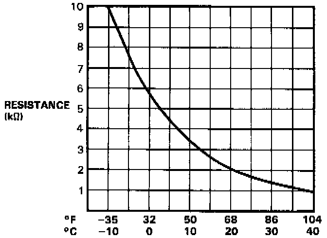
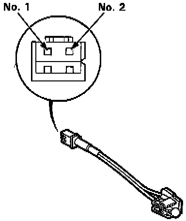

Component Test - Automatic Climate Control

Compare the resistance reading between No. 1 and No. 2 terminals of the in-car temperature sensor with specifications shown in the graph: It should be within specification.
Resistance at 68°F (20°C): approx. 2 K ohms.
NOTE: It is not necessary to remove the sensor from the control panel to test it.

CAUTION: The sensor uses a thermistor which can be damaged if high current is applied to it during testing. Therefore, use a circuit tester that puts out a measuring current of 1 mA or less. (At the 20 K ohms range)